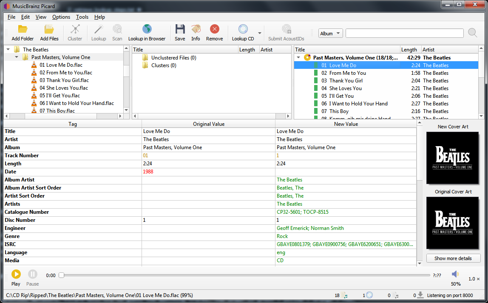

Matching Files to Tracks¶
Once you have retrieved the desired album information into the right-hand pane, the next step is to match the files from the left-hand pane to the corresponding track in the right-hand pane. A music symbol in front of a track number in the right-hand pane indicates that there has been no file assigned to the track. In some cases, Picard may have already tried to do the matching for you. If the matching wasn’t done automatically, drag the appropriate files onto the appropriate album and track.

Depending on your previous metadata, Picard will try to guess the matching tracks. The order is green > yellow > orange > red, where green is the best match. If you are seeing a lot of red and orange, it could mean that Picard has guessed incorrectly, or that your files didn’t have a lot of previous metadata to work with. If this is the case, it’s recommended to select a track and compare the “Original Values” and “New Values” in the metadata pane. If there is an incorrect match, simply drag the track to its correct spot in the right-hand pane.
{kind=link}
Right-clicking an item in the track list brings up a menu of commands, including “Info”, “Open in Player”, “Open Containing Folder”, “Search for similar tracks”, “Looup in Browser”, “Generate AcoustID Fingerprints”, “Save” and “Remove”. In addition, you can re-run any associated plugins or scripts against only the selected item. Right-clicking an items in the left-hand pane will bring up a similar menu of commands.
When you select an item in the right-hand pane, the original and new metadata for the item is displayed. Right-clicking a line in the tag list brings up a menu of commands, including “Edit”, “Add to ‘Preserved Tags’ List”, “Remove” and “Add New Tag”, along with an option to display the changed tags first.